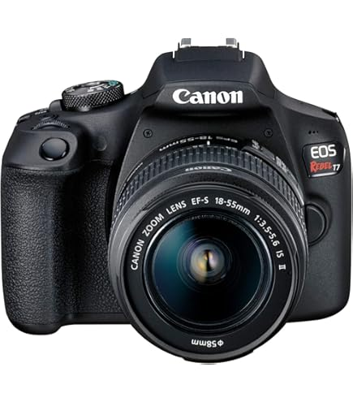
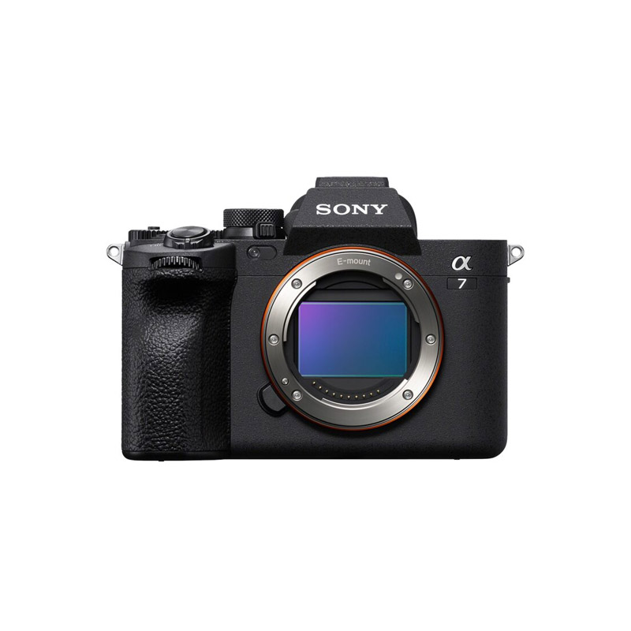

Recommended Photography Equipment
Camera Body
Whether you are a passionate beginner or a seasoned professional, a high-quality camera is the key to transforming your travel photos into stunning masterpieces. With our expert recommendations, you will find the perfect camera to capture every vibrant landscape, striking detail, and unforgettable moment with unparalleled clarity.
Elevate your photography game and ensure your memories are as stunning as the destinations themselves!

- Beginner: Canon EOS Rebel T8i Buy Now

- Professional: Sony Alpha 7 III Buy Now
Lenses
Whether you are capturing sweeping landscapes, intimate portraits, or the untamed beauty of wildlife, unlock your creative potential by choosing lenses tailored to your vision.
The right lens transforms every shot into a masterpiece: make it yours today!

- Wide-Angle: Canon EF 16-35mm f/4L Buy Now

- Prime: Sony FE 50mm f/1.8 Buy Now
Join Our Community!
Connect with fellow photographers and travelers from around the world! Share your experiences, ask for advice, and get inspired by stunning travel photography!
Our community is a space for learning, sharing, and celebrating the art of photography in travel. Whether you are a professional or taking your first steps behind the lens, you will discover a supportive and inspiring space to exchange ideas and elevate your craft. Discover the forum and events dedicated to our community!
Community Forum
Explore discussions, ask questions, and share your travel photography insights with fellow enthusiasts. Find answers or inspire others by contributing your expertise!
How to photograph the Northern Lights?
Tips and tricks to capture the magical auroras in Norway.
10 replies • Last updated 2 days agoCapture Kyoto’s temples and culture
Ideas for creating stunning compositions in Japan's historical city.
15 replies • Last updated 1 day agoBest equipment for travel photography
A discussion on cameras, lenses, and must-have gear for photos.
24 replies • Last updated 5 hours agoCommunity Events
Join us in unforgettable events, whether online or in-person, designed to connect, inspire, and celebrate our shared passion for photography and travel!
Upcoming Event

Photography Workshop: The Scottish Highlands
Dive into the magic of Scotland's natural beauty with expert-guided workshops, photo walks, and networking sessions.
Reserve Your SpotPast Events

The Wordless Norway Fjords
Experience the landscapes of Norway Fjords, improving your photography skills!
The Timeless Beauty of Petra
Capture the pure and timeless essence of Petra, guided by expert photographers!